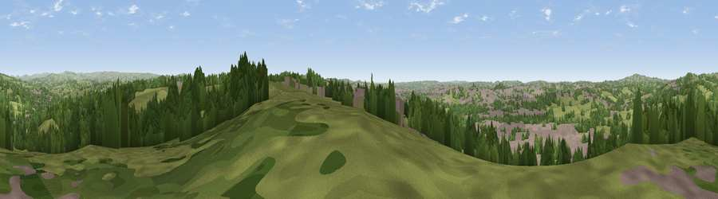

Viewpoint near Stockton Brook
#18223 in England · top 25% of its area beats it · near Stockton BrookThe view, rendered

A 360° render of this exact spot computed from the terrain model, tree cover and land cover — summer colours, afternoon light, calibrated against photographs of famous viewpoints. Real trees, hedges and buildings will differ in detail.
The panorama
Grey silhouette: terrain skyline in each direction (720 bearings, Earth curvature and refraction included). Dashed green: skyline with trees (+15 m) and buildings (+8 m) as obstacles. Blue strip: how far the ground is visible on each bearing.
Where the view opens
Wedge length = distance to the farthest visible ground on that bearing (vegetation-aware). Rings at 10, 25 and 50 km.
What fills the view
48% grassland · 33% woodland · 19% built-up ·
Angular shares of the visible panorama (visual magnitude), not map area. Landscape diversity 0.46 (0–1 Shannon).
Key numbers
More beautiful places nearby
The staircase of upgrades: each row has a higher view potential than everything closer. Driving times are estimates from straight-line distance, calibrated against real road routing — check an actual route before setting out.
| Place | Direction | Drive | Score |
|---|---|---|---|
| Viewpoint near Bagnall | SSE · 1 km | ~4 min | 57.0 |
| Viewpoint near Brown Edge | NNW · 3 km | ~8 min | 65.2 |
| Viewpoint near Biddulph Moor | N · 8 km | ~16 min | 65.5 |
| Ashenough Hill | WNW · 8 km | ~17 min | 66.0 |
| Viewpoint near Biddulph Moor | N · 8 km | ~17 min | 66.2 |
| Viewpoint near Mow Cop | NW · 9 km | ~17 min | 80.2 |
| Viewpoint near Harthill | W · 41 km | ~60 min | 80.5 |
| Viewpoint near Little Wenlock | SSW · 51 km | ~72 min | 84.2 |
53.05506, -2.12640 · source: screening · position refined by local search. Computed location — check access rights before visiting.